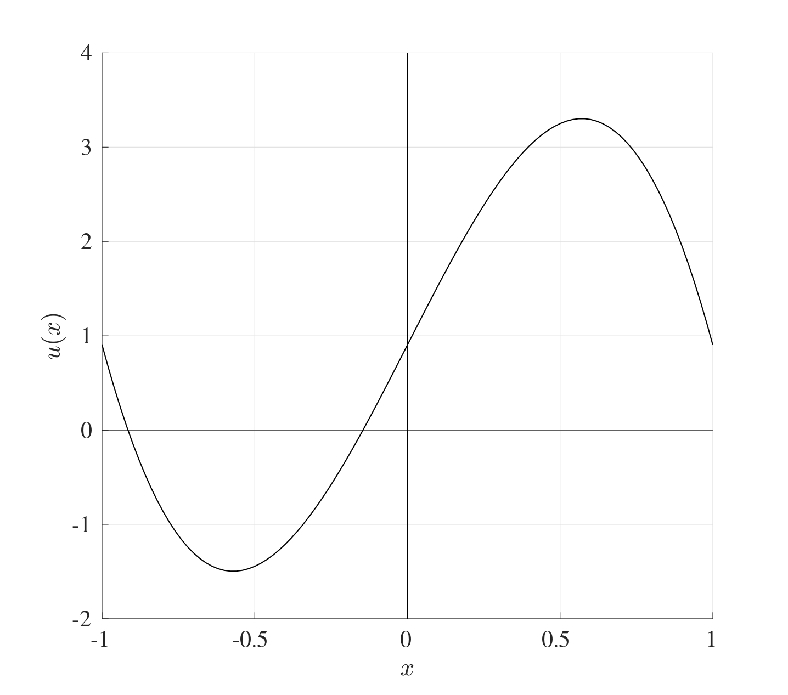

10 Symmetric Boundary Conditions
The use of symmetric boundary conditions arises in many cases where conditions at the ends are not known explicitly but they are related. For instance, consider the ODE representing the conduction problem \[-k_f\frac{\mathrm{d}^{2} T}{\mathrm{d} x^{2}}=q_{gen}(x) \quad \text{in} \quad -L< x < L\] where \(k_f\) is the material’s conductivity and \(q_{gen}\) is the heat transfer. Symmetric boundary conditions can be imposed as \[T(-L)=T(L) \quad \text{and} \quad k_f\frac{\mathrm{d} T}{\mathrm{d} x}(L)=\alpha(T(L)-T_{air})\] for some constant \(\alpha\). This problem can be interpreted as an insulated metal rod of length \(2L\) that has been heated all the way through and then as it cools, it loses heat equally from both ends (which is the condition \(T(-L)=T(L)\)), and that this heat loss at \(L\) is proportional to the temperature gradient between the rod and the air (which is the second condition \(k_f\frac{\mathrm{d} T}{\mathrm{d} x}(L)=\alpha(T(L)-T_{air})\)). The issue with this type of problems is that the temperature at both boundaries are not explicitly known, but it is known that they are the same.
10.1 Finite Difference Method for Symmetric Boundary Value Problems
This problem can be tackled in a very similar way to BVPs and MVPs. Consider the differential equation \[a(x) \frac{\mathrm{d}^{2} u}{\mathrm{d} x^{2}}+b(x) \frac{\mathrm{d} u}{\mathrm{d} x}+c(x) u=f(x) \quad \text{with} \quad -L< x < L.\] The interval \([-L,L]\) will be split into \(N\) equally sized sections each of width \(h=\frac{2L}{N}\) and the grid points are labelled \(x_n=-L+nh\) for \(n=0,1,2,\dots,N\). This differential equation can be discretised using the centred difference approximation (just as in Section 8.2) to give \[\alpha_n U_{n-1}+\beta_n U_n+\gamma_n U_{n+1}=f(x_n) \quad \text{for} \quad n=1, 2, \dots, N-1\] \[\text{where} \quad \alpha_n=\frac{a(x_n)}{h^2}-\frac{b(x_n)}{2h}, \quad \beta_n=-\frac{2a(x_n)}{h^2}+c(x_n), \quad \gamma_n=\frac{a(x_n)}{h^2}+\frac{b(x_n)}{2h}.\] This gives a set of \(N-1\) equations in \(N+1\) unknowns, namely \(U_0, U_1, U_2, \dots, U_N\). In this case, neither \(U_0\) nor \(U_N\) are explicitly known, therefore none of the unknowns can be eliminated from the boundary conditions per se.
Suppose the given conditions are \[u(-L)=u(L) \quad \text{and} \quad \frac{\mathrm{d} u}{\mathrm{d} x}(L)=pu(L)+q\] where \(p\) and \(q\) are some constants. The first condition is the symmetric boundary condition which represents the fact that the value of the unknown solution \(u\) at both ends is the same, then \(U_0=U_N\), even though neither is explicitly known. The term \(U_0\) can be eliminated since determining \(U_N\) automatically determines \(U_0\), this reduces the number of unknowns to \(N\).
Consider the discretisation at \(n=1\), namely \[\alpha_1 U_{0}+\beta_1 U_1+\gamma_1 U_{2}=f(x_1),\] since \(U_0=U_N\), this can be rewritten in terms of \(U_N\) instead as \[\beta_1 U_1+\gamma_1 U_{2}+\alpha_1 U_{N}=f(x_1).\]
The discretised form of the differential equation at \(n=N\) is \[\alpha_N U_{N-1}+\beta_N U_N+\gamma_N U_{N+1}=f(x_N). \tag{10.1}\] Just as in the case with the MVPs, an artificial point \(U_{N+1}\) is introduced which is the solution approximated at the point \(x=x_{N+1}=L+h\) which is beyond the computational domain.
To find an expression for \(U_{N+1}\), first consider the second condition \[\frac{\mathrm{d} u}{\mathrm{d} x}(x_N)=\frac{\mathrm{d} u}{\mathrm{d} x}(L) pu(L)+q \approx pU_N+q.\] The LHS can be rewritten in terms of its centred differencing approximation as \[\frac{\mathrm{d} u}{\mathrm{d} x}(x_N) \approx \frac{u(x_{N+1})-u(x_{N-1})}{2h} \approx \frac{U_{N+1}-U_{N-1}}{2h}.\]
Combining these two can give an expression for \(U_{N+1}\) as: \[\frac{U_{N+1}-U_{N-1}}{2h} \approx pU_N+q \quad \implies \quad U_{N+1}=U_{N-1}+ 2hpU_N+2hq.\]
Replacing this into Equation 10.1 gives \[(\alpha_N+\gamma_N)U_{N-1}+(\beta_N+2hp\gamma_N)U_N=f(x_N)-2hq\gamma_N,\] thus providing the last equation to complete the set. Finally, this system can be written in matrix form as \(A\boldsymbol{U}=\boldsymbol{g}\) where \[\begin{multline*} \underbrace{\begin{pmatrix} \beta_1 & \gamma_1 & 0 & \dots & 0 & 0 & \alpha_1 \\ \alpha_2 & \beta_2 & \gamma_2 & \dots & 0 & 0 & 0 \\ 0 & \alpha_3 & \beta_3 & \dots & 0 & 0 & 0 \\ \vdots & \vdots & \vdots & \ddots & \vdots & \vdots & \vdots \\ 0 & 0 & 0 & \dots & \beta_{N-2} & \gamma_{N-2} & 0 \\ 0 & 0 & 0 & \dots & \alpha_{N-1} & \beta_{N-1} & \gamma_{N-1} \\ 0 & 0 & 0 & \dots & 0 & \alpha_{N}+\gamma_N & \beta_{N}+2hp\gamma_N \end{pmatrix}}_{A} \underbrace{\begin{pmatrix} U_1 \\ U_2 \\ U_3 \\ \vdots \\ U_{N-2} \\ U_{N-1} \\ U_{N} \end{pmatrix}}_{\boldsymbol{U}}=\\ \underbrace{\begin{pmatrix} f(x_1) \\ f(x_2) \\ f(x_3) \\ \vdots \\ f(x_{N-2}) \\ f(x_{N-1}) \\ f(x_{N})-2hq\gamma_{N} \end{pmatrix}}_{\boldsymbol{g}}. \end{multline*}\] This can then be solved in MATLAB but bearing in mind that \(U_0=U_N\) which determines the function \(U\) at \(-L\) and \(L\).
Consider the conduction problem \[-\frac{\mathrm{d}^{2} T}{\mathrm{d} x^{2}}=40\sin(x) \quad \text{in} \quad -1< x < 1\] with the conditions \[T(-1)=T(1) \quad \text{and} \quad \frac{\mathrm{d} T}{\mathrm{d} x}(1)=\frac{1}{2}(T(1)-25).\] 